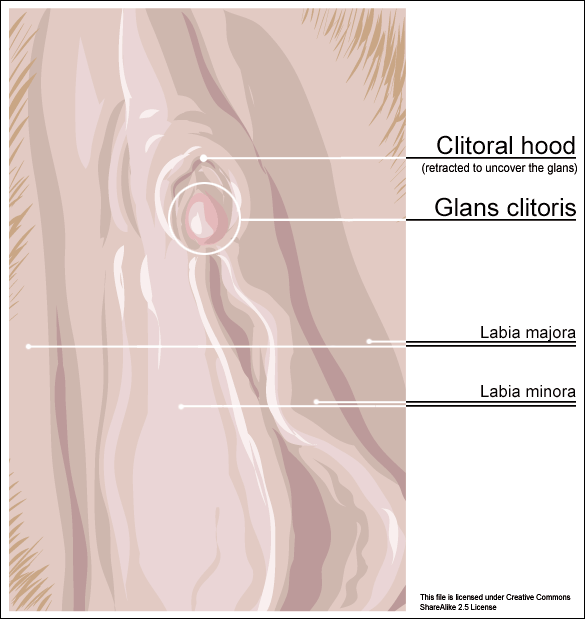

")
شافعی اور حنبلی فقہ مین عورت کے ختنے کو "واجب" قرار دیا گیا ہے۔ جبکہ بقیہ فقہاء نے اسے عورت کے لیے بہتر سمجھا ہے۔
پیغمبر اسلا کی صحیح حدیث ہے (سنن ابو داؤد، ادب کا بیان، ختنے کا بیان):
ام عطیہ انصاری رضی اللہ تعالیٰ عنہا کہتی ہیں کہ مدینہ میں ایک عورت تھی جو (عورتوں کی ) ختنہ کیا کرتی تھی (جیسا کہ اس زمانہ میں عورتوں کی ختنہ کا بھی رواج تھا ) نبی کریم صلی اللہ علیہ وسلم نے (ایک دن ) اس عورت سے فرمایا کہ " ٹنہ کو " زیادہ مت کاٹا کرو (بلکہ تھوڑا سا اوپر سے کاٹ دیا کرو ) کیونکہ یہ (یعنی زیادہ نہ کاٹنا ) عورت کے لئے بھی بہت لذت بخش ہوتا ہے اور مرد کو بھی بہت پسندید ہوتا ہے.
البانی نے اس روایت کو صحیح کہا ہے (لنک)
جبکہ مشکوۃ کی شارح نے یہ روایت نقل کر کے لکھا ہے (لنک):
لكن رواه الطبراني بسند صحيح ، والحاكم في مستدركه عن الضحاك بن قيس ولفظه : " اخفضي ولا تنهكي ، فإنه أنضر للوجه وأحظى عند الزوج " .
ترجمہ:
اس روایت کو طبرانی نے صحیح سند کے ساتھ اور حاکم نے اپنی مستدرک میں ضحاک ابن قیس سے نقل کیا ہے جس کے الفاظ یہ ہیں احفضنی ولاتنہکی فانہ انضر للزوجۃ واحظی عند الزوج ۔
چنانچہ:
(1) مسلمانوں کا 'اجماع' ہے کہ پیغمبر اسلام نے عورت کے ختنے کی "مذمت" نہیں کی۔
(2) بلکہ پیغمبر اسلام نے عورت کے ختنے کو شریعت میں "حلال اللہ" کہہ کر اسکی طرف رغبت دلائی ہے۔
(نوٹ:
پیغمبر اسلام درست نہیں کہہ رہے ہیں کہ عورت کے اس حصے کو کاٹنے سے عورت کو زیادہ مزہ اور لذت ملتی ہے۔
بلکہ حقیقت یہ ہے کہ اس حصے کو تھوڑا بھی کاٹ دیا جائے تو عورت کی جنسی میلان کی خواہش ختم یا کم ہو جاتی ہے اور پہلے جیسی شہوت باقی نہیں رہتی۔ یہ عمل نہ صرف یہ کہ اذیتناک ہے، بلکہ عورت پر ہر صورت میں ظلم ہے اور غیر فطری ہے۔ اگر اللہ کو یہ چیز کٹوانی ہی مقصود تھی تو پھر اس نے پہلے ہی انسان کو کامل طریقے سے مختون پیدا کیوں نہیں کر دیا؟)
مسلمانوں کا اسلام میں عورت کے ختنے سے انکار
٭٭٭٭٭٭٭٭٭٭٭٭٭٭٭٭٭٭٭٭٭٭٭٭٭٭٭٭٭٭٭٭٭٭٭٭٭
جب عرب اور افریقی اسلامی ممالک میں کڑوڑوں بچیوں اور عورتوں کے ختنے کا ذکر آتا ہے، تو مسلمان دھوکہ دینے کے لیے کہتے نظر آتے ہیں کہ یہ پیغمبر اسلام کی تعلیمات نہیں ہیں بلکہ ان ممالک کے لوگوں کا اپنا کلچر ہے۔ اسکے بعد اپنی بات کو تقویت دینے کے لیے وہ یہ حوالہ بھی پیش کرتے ہیں۔
صاحب عون المعبود ۴/۵۴۳نے عورت کے ختنہ پر احادیث کو جمع کیا ہے آخر میں لکھا ہے :
’’اور عورت کے ختنہ کی حدیث کئی سندوں سے مروی ہے جو سب ضعیف معلول اور مخدوش ہیں ان سے حجت پکڑنا صحیح نہیں جس طرح آپ پہچان گئے اور ابن منذر نے کہا ختان میں کوئی حدیث نہیں جس کی طرف رجوع کیا جائے اور نہ کوئی سنت ہے جس کی پیروی کی جائے۔
یہ مسلمان جھوٹ بول رہے ہیں۔ ان عربی اور افریقی اسلامی ممالک میں عورت کے ختنے کا تعلق بلا شک و شبہ پیغمبر اسلام سے بھی ہے۔
امام نؤوی اپنی کتاب " المجموع شرح المھذب" (جلد 1، صفحہ 348، کتاب الطہارۃ) میں لکھتے ہیں:
( فرع ) الختان واجب على الرجال والنساء عندنا وبه قال كثيرون من السلف
ترجمہ
"ختنہ کروانا مرد و عورت پر واجب ہے اور سلف کی اکثریت کا قول ہے۔"
اور پھر آگے مزید فرماتے ہیں:
والمذهب الصحيح المشهور الذي نص عليه الشافعي رحمه الله وقطع به الجمهور أنه واجب على الرجال والنساء ، ودليلنا ما سبق . فإن احتج القائلون بأنه سنة بحديث : الفطرة عشرة ومنها الختان ، فجوابه قد سبق عند ذكرنا تفسير الفطرة والله أعلم .
ترجمہ:
"اور صحیح اور مشہور مذہب جس کی تائید امام شافعی رحمۃ اللہ اور جمہور کرتے ہیں وہی یہ ہے کہ مرد و عورت پر ختنہ کروانا واجب ہے۔۔۔۔۔
حوالہ: المجموع شرح المھذب از امام النؤوی، جلد 1، صفحہ 348، کتاب الطہارۃ
اسلام سوال جواب (سعودی مفتیوں کا سب سے بڑا ویب سائیٹ) لکھتا ہے:
لنک: https://islamqa.info/ur/82859
" مدينہ ميں ايك عورت ختنہ كيا كرتى تھى تو رسول كريم صلى اللہ عليہ وسلم نے اسے فرمايا كہ:
" تم بالكل ہى كاٹ كر ختم نہ كردو، كيونكہ يہ عورت كے ليے زيادہ فائدہ اور نفع مند ہے، اور خاوند كے ليے محبوب ترين اور پسنديدہ ہے "
سنن ابوداود حديث نمبر ( 5271 ) علامہ البانى رحمہ اللہ نے صحيح ابو داود ميں اسے صحيح قرار ديا ہے.
یہی اسلام سوال جواب ویب سائیٹ آگے مزید عورتوں کے ختنے کے دلائل میں لکھتا ہے:
اور صحيح مسلم ميں عائشہ رضى اللہ تعالى عنہا سے مروى ہے كہ رسول كريم صلى اللہ عليہ وسلم نے فرمايا:
" جب وہ چار شاخوں كے درميان بيٹھے اور ختنہ ختنہ سے چھو جائے تو غسل واجب ہو جاتا ہے "
صحيح مسلم حديث نمبر ( 349 ).
(چنانچہ اس حدیث سے بھی علماء نے یہی اخذ کیا ہے کہ رسول (ص) اگر عورت کا ختنہ واجب یا مستحب نہ ہوتا تو رسول (ص) اس حدیث میں عورت کے ختنے کا ذکر نہ فرماتے)۔
اور ترمذى وغيرہ كى روايت ميں ہے كہ:
" جب دونوں ختنے مل جائيں .. "
سنن ترمذى حديث نمبر ( 109 ).
اس حديث پر امام بخارى رحمہ اللہ نے صحيح بخارى ميں باب باندھا ہے، حافظ ابن حجر رحمہ اللہ كہتے ہيں:
" اس تثنيہ سے مراد مرد اور عورت كا ختنہ ہے.
اور عورت كا ختنہ اس طرح ہو گا كہ پيشاب خارج ہونے والى جگہ پر مرغ كى كلغى جيسى چمڑى كا كچھ حصہ كاٹا جائے، سنت يہ ہے كہ وہ سارى كلغى نہ كاٹى جائے بلكہ اس كا كچھ حصہ كاٹا جائے "
ديكھيں: الموسوعۃ الفقھيۃ ( 19 / 28 ).
آگے یہی اسلام سوال جواب ویب سائیٹ لکھتا ہے کہ شافعی اور حنبلی فقہ کے مطابق عورتوں کا ختنہ کرنا "واجب" ہے۔ مزید یہ کہ عورت کا ختنہ کرنا "مکرم" ہے:
شافعى حضرات كے ہاں اور حنبلى وغيرہ حضرات كے مشہور مسلك ميں عورتوں كا ختنہ كرنا واجب ہے.
اور اكثر اہل علم يہ كہتے ہيں كہ عورتوں كے ليے ختنہ كرنا واجب نہيں، بلكہ يہ سنت اور ان كے ليے تكريم كا باعث ہے.
اندازے کے مطابق اس وقت دنیا بھر میں اس عمل سے گزرنے والی خواتین کی تعداد 70 کروڑ ہے۔
پچھلی 14 صدیوں سے کڑوڑوں بچیوں کو بغیر سن کی دوائی دیے انکے جسم کے ٹکڑے کو کاٹ ڈالا گیا اور وہ بے مظلوم چیختی چلاتی ہی رہ گئیں۔
ان میں سے کچھ تو زخم کی وجہ سے مر بھی گئیں۔
آج بھی 25 فیصد سے زائد لڑکیوں کو بغیر کسی دوا کے ختنے کے اس اذیتناک مرحلے سے گذارا جاتا ہے۔
اور یہ ختنے کرنے والی عرب میں پیغمبر اسلا کے زمانے میں "نائن" کہلاتی تھیں۔
صحیح بخاری کتاب المغازی باب قتل حمزۃ ۲/۵۸۳:
"غزوئہ احد میں جب قتال کے لیے لوگ صف بستہ ہو گئے تو سباع نامی کافر نے نکل کر للکارا: ''کیا کوئی ہے جو مجھ سے لڑے یہ سنتے ہی حمزہ بن عبدالمطلب اس کے مقابلہ کے لیے نکلے اور کہنے لگے ارے سباع ارے ام انمار (حجامنی) کے بیٹے تیری ماں تو عورتوں کے ٹنے تراشا کرتی تھی کمبخت نائن تھی اور تو اللہ ورسول سے مقابلہ کرتا ہے یہ کہہ کر حمزہ نے اس پر حملہ کر دیا۔"
رسول کی سنت میں یہ نائی اور نائن آج تک چلے آ رہے ہیں اور معصوم بچوں اور بچیوں کو اذیت میں مبتلا کیے جا رہے ہیں۔
جامعة الازھر مصر کے سابقہ وائس چانسلر جناب جاد الحق علی جاد الحق صاحب فرماتے ہیں کہ :
1- اتفق الفقهاء على أن الختان في حق الرجال والخفاض في حق الإناث مشروع، ثم اختلفوا في كونه سنة أو واجباً.
2- الختان للرجال والنساء من صفات الفطرة التي دعا إليها الإسلام وحث على الالتزام بها.
ترجمہ:
1- اس بارے میں فقہاء کا اتفاق ہے کہ مردوں اور عورتوں کا ختنہ شرعی حکم ہے، اختلاف صرف اس بات میں ہے کہ یہ سنت ہے یا واجب۔
2- مردوں اور عررتوں کا ختنہ فطرت کی ان خوبیوں میں سے ہے جن کی طرف اسلام

خبردار: عورت کے ختنے کے حوالے سے جدید مسلمانوں کے دھوکے
٭٭٭٭٭٭٭٭٭٭٭٭٭٭٭٭٭٭٭٭٭٭٭٭٭٭٭٭٭٭٭٭٭٭٭٭٭٭٭٭٭٭٭٭٭٭٭
آج انڈونیشیا و دیگر اسلامی ممالک میں باقاعدہ مسلمان عورتوں کی ختنے کی مہم پھیلانے کی آرگنائزیشنز بنی ہوئی ہیں۔ وہ اپنا پیغام یوں دیتی ہیں کہ اسلام میں عورت کا ختنہ فقط یہ ہے کہ Clitoris کے اوپر موجود کھال (Hood) کو کاٹ دیا جائے۔ اسکے بعد وہ اسکے فوائد گنوانا شروع کر دیتی ہیں۔
.
اصل حقیقت: اسلامی ختنے میں Clitoris Hood کو نہیں بلکہ Labia کو کاٹا جاتا ہے
٭٭٭٭٭٭٭٭٭٭٭٭٭٭٭٭٭٭٭٭٭٭٭٭٭٭٭٭٭٭٭٭٭٭٭٭٭٭٭٭٭٭٭٭٭٭٭٭٭٭٭٭٭٭٭٭٭
اسلامی فتویٰ کا سب سے بڑا ویب سائیٹ، اسلام سوال جواب لکھتا ہے:
"عورت كا ختنہ اس طرح ہو گا كہ پيشاب خارج ہونے والى جگہ پر مرغ كى كلغى جيسى چمڑى كا كچھ حصہ كاٹا جائے، سنت يہ ہے كہ وہ سارى كلغى نہ كاٹى جائے بلكہ اس كا كچھ حصہ كاٹا جائے (دیکھئے الموسوعۃ الفقھيۃ 19 / 28 )"
لنک: https://islamqa.info/ur/82859
۔
پیغمبر اسلام کا قول یہ ہے:
ام عطیہ انصاری رضی اللہ تعالیٰ عنہا کہتی ہیں کہ مدینہ میں ایک عورت تھی جو (عورتوں کی ) ختنہ کیا کرتی تھی (جیسا کہ اس زمانہ میں عورتوں کی ختنہ کا بھی رواج تھا ) نبی کریم صلی اللہ علیہ وسلم نے (ایک دن ) اس عورت سے فرمایا کہ " ٹنہ کو " زیادہ مت کاٹا کرو (بلکہ تھوڑا سا اوپر سے کاٹ دیا کرو ) کیونکہ یہ (یعنی زیادہ نہ کاٹنا ) عورت کے لئے بھی بہت لذت بخش ہوتا ہے اور مرد کو بھی بہت پسندید ہوتا ہے.
البانی نے اس روایت کو صحیح کہا ہے۔
عورت کا اسلامی ختنہ درجہ دوم کی FGM ہے
٭٭٭٭٭٭٭٭٭٭٭٭٭٭٭٭٭٭٭٭٭٭٭٭٭٭٭٭٭٭
اسلامی ختنہ، جس میں عورت کے Labia کو کاٹا جاتا ہے، وہ درجہ دوم کی FGM یا Female Genital Mutilation ہے۔
اس درجہ بندی کے متعلق مزید تفصیلات اس لنک پر:
https://ur.wikipedia.org/wiki/نسوانی_ختنہ
ایسی ہی ایک مسلمان عورتوں کا فیس بک پیج یہ ہے جہاں آپ انکے اس دھوکے کو پڑھ سکتے ہیں کہ اسلامی ختنہ فقط Clitoris کی Hood کو کاٹنا ہے۔
https://www.facebook.com/Islamic-Female-Circumcision-480676625476877/
حصہ دوم: ائمہ اربعہ کے فقہ میں عورت کا ختنہ
امام نووی اپنی کتاب "المجموع شرح المهذب" میں لکھتے ہیں (لنک):
"والمذهب الصحيح المشهور الذي نص عليه الشافعي رحمه الله وقطع به الجمهور أنه واجب على الرجال والنساء ، ودليلنا ما سبق . فإن احتج القائلون بأنه سنة بحديث : الفطرة عشرة ومنها الختان ، فجوابه قد سبق عند ذكرنا تفسير الفطرة والله أعلم .
ترجمہ:
"اور صحیح اور مشہور مذہب جس کی تائید امام شافعی رحمۃ اللہ اور جمہور کرتے ہیں وہی یہ ہے کہ مرد و عورت پر ختنہ کروانا واجب ہے۔۔۔۔۔
حوالہ: المجموع شرح المھذب از امام النؤوی، جلد 1، صفحہ 348، کتاب الطہارۃ"
پھر آگے امام نووی لکھتے ہیں:
الختان واجب على الرجال والنساء عندنا وبه قال كثيرون من السلف ، كذا حكاه الخطابي ، وممن أوجبه أحمد ۔۔۔ والمذهب الصحيح المشهور الذي نص عليه الشافعي رحمه الله وقطع به الجمهور أنه واجب على الرجال والنساء
ترجمہ:
ہمارے نزدیک ختنے مرد اور عورت پر واجب ہیں۔ کثیر سلف کا یہی نظریہ تھا جیسا کہ الخطابی نے نقل کیا ہے۔ اور جنہوں نے اسے (مرد و عورت) کے لیے واجب قرار دیا ہے، ان میں امام احمد شامل ہیں۔۔۔ اور صحیح اور مشہور مذہب جس کی تائید امام شافعی رحمۃ اللہ اور جمہور کرتے ہیں وہی یہ ہے کہ مرد و عورت پر ختنہ کروانا واجب ہے۔۔۔۔۔
پھر آگے امام نووی لکھتے ہیں:
وقال مالك وأبو حنيفة : سنة في حق الجميع
ترجمہ: اور امام مالک اور امام ابو حنیفہ نے کہا ہے کہ یہ (واجب نہیں، بلکہ) سنت ہے دونوں (مرد و عورت) کے لیے۔
چنانچہ صورتحال یہ ہے کہ چاروں ائمہ اربعہ عورت کے ختنے کو اسلام کا جز یوں مانتے ہیں کہ:
- امام شافعی کے نزدیک عورت کا ختنہ "واجب" ہے۔
- امام احمد کے نزدیک عورت کا ختنہ مکرم اور واجب ہے۔
- امام مالک کے نزدیک عورت کا ختنہ سنت ہے۔
- امام ابو حنیفہ کے نزدیک عورت کا ختنہ سنت ہے۔
مزید حوالے:
- وکیپیڈیا (لنک) پر چاروں ائمہ اربعہ کے متعلق یہی بات دیگر اسلامی ریفرنسز کے ساتھ موجود ہے۔
- اسلام سوال جواب نے ایک تفصیلی فتوے (لنک) جاری کیا ہے جہاں ان چاروں ائمہ اربعہ کا فتوی بیان کیا گیا ہے۔
- وکی اسلام (لنک) پر عورت کے ختنے کے متعلق بے تحاشہ مزید ریفرنسز۔
اب اس فنِ حدیث کا گھن چکر دیکھیے ۔۔۔ مثلاً جب کوئی صحیح حدیث امام ابو حنیفہ کے فتوے کے مطابق نہیں ملتی، تو احناف یہ کہہ کر معترضین کا رد کر دیتے ہیں کہ امام ابو حنیفہ تو خود تابعی تھے (یعنی انہوں نے صحابی کو دیکھا تھا)۔ چنانچہ ابو حنیفہ کو بعد میں انے والے محدثین کی روایتوں کی ضرورت نہیں، یہ محدثین تو ابو حنیفہ کے بعد آئے ہیں جبکہ ابو حنیفہ تابعین سے کہیں بہتر طور پر فیضیاب ہوئے ہیں اور انہیں ان بعد میں آنے والوں سے کہیں بہتر طور پر حدیث کا علم ہے۔
ناقابل تردید حقیقت: اسلام کی وجہ سے کڑوڑوں اربوں عورتوں پر ختنے کا ظلم ہوا
مسلمانوں کی طرف سے دعویٰ کیا جاتا ہے کہ اللہ "علیم و حکمت" والا ہے۔ لیکن اس دعوے کے برعکس مسلمانوں کا اللہ تو ڈھنگ سے ایک شریعت بھی نازل نہ کر پایا۔ اسی بے ڈھنگے طریقے کی شریعت نازل کرنا کا نتیجہ یہ نکلا کہ چاروں ائمہ اربعہ نے عورت کے ختنے کو واجب، یا سنت کہا۔۔۔۔ اور اسکا آگے نتیجہ یہ نکلا کہ پچھلے 1400 سالوں میں لاکھوں، بلکہ کڑوڑوں عورتوں اور بچیوں کے ختنے کرتے ہوئے انکی شرمگاہوں کے ایک حصے کو کاٹ ڈالا گیا اور ان سے انکا جنسی میلان چھین کر انکی حق تلفی کی گئی، ان پر ظلم کیا گیا۔
یہ وہ کڑوی حقیقت ہے جس سے آجکے مسلمان لاکھ منہ چھپانے کی کوشش کرتے ہیں، بے تحاشہ جھوٹ بولتے ہیں، مگر پھر بھی اپنے پیغمبر کے کڑوڑوں عورتون پر کیے جانے والے اس ظلم کو نہیں چھپا سکتے۔
حصہ سوم: فن حدیث ۔۔۔ ایک بھونڈا مذاق
٭٭٭٭٭٭٭٭٭٭٭٭٭٭٭٭٭٭٭٭٭٭٭٭٭٭٭٭٭٭٭٭
اصل فساد کی جڑ ان مسلمانوں کا اپنا "فنِ حدیث" ہے، جو کہ سوائے اسکے اور کچھ نہیں کہ جو حدیثیں عجیب و غریب ہوتی ہیں، یا جن سے نبی جھوٹا ثابت ہوتا ہے، انکا کوئی نہ کوئی بہانہ کر کے دفاع کیا جائے۔
اس فن حدیث کی وجہ سے ہی شریعت ایک نہیں ہوتی، بلکہ ایک ہی مسئلے پر کئی کئی شریعتیں بنی ہوتی ہیں۔
اور یہ شریعتیں بیان کرنے والے "ہم ملحد" نہیں ہوتے، بلکہ "خود" انکے علماء ہوتے ہیں۔
لیکن یہ اپنے ان علماء کو بھی چھوڑ دیتے ہیں اور اپنے اس فن حدیث کے مذاق کو بھی کہ جس کے تحت انہی کے علماء نے یہ متضاد فتوے دیے ہوتے ہیں، اور سارا الزام ہم ملحدوں کے سر ڈال دیتے ہیں۔
امام حاکم والی روایت پر "فن حدیث" کے ہتھکنڈے
٭٭٭٭٭٭٭٭٭٭٭٭٭٭٭٭٭٭٭٭٭٭٭٭٭٭٭٭٭٭٭٭٭٭٭٭٭٭
مسلمان عذر خواہوں کی طرف سے اعتراض کیا گیا ہے کہ امام حاکم والی روایت بھی "ضعیف" ہے۔ روایت یہ ہے (لنک):
ثَنَا هِلالُ بْنُ الْعَلاءِ الرَّقِّيُّ ، ثَنَا أَبِي ، ثَنَا عُبَيْدُ اللَّهِ بْنُ عَمْرٍو ، عَنْ زَيْدِ بْنِ أَبِي أُنَيْسَةَ ، عَنْ عَبْدِ الْمَلِكِ بْنِ عُمَيْرٍ ، عَنِ الضَّحَّاكِ بْنِ قَيْسٍ ، قَالَ : كَانَتْ بِالْمَدِينَةِ امْرَأَةٌ تَخْفِضُ النِّسَاءَ ، يُقَالُ لَهَا أُمُّ عَطِيَّةَ ، فَقَالَ لَهَا رَسُولُ اللَّهِ صَلَّى اللَّهُ عَلَيْهِ وَآلِهِ وَسَلَّمَ : " اخْفِضِي وَلا تُنْهِكِي ، فَإِنَّهُ أَنْضَرُ لِلْوَجْهِ وَأَحْظَى عِنْدَ الزَّوْجِ " .
ترجمہ:
حاکم نے ھلال سے، انہوں نے عبدللہ بن عمرو سے زید بن ابی انسیا سے عبدالملک بن عمیر سے ضحاک بن قیس سے روایت کیا ہے کے ایک عورت مدینہ میں عورتوں کا ختنہ کرتی تھی جس کا نام ام عطیہ ہے تو رسول الله نے اس سے کہا کہ کم کاٹو کیونکہ یہ عورت کے لیے لذت اور مرد کے لیے رغبت کا باعث ہے۔
ان مسلمان عذر خواہوں نے یہ ثبوت پیش کیے:
(1) علماء نے اسکو ضعیف بتلایا ہے۔
(2) اس سند میں عبدالملک بن عمیر پر اختلاف ہوا ہے ۔۔۔ حافظ ابن حجر نے الصغیر ٨٣/٤ میں کہا ہے " اس روایت میں عبدالملک بن عمیر پر اختلاف ہوا ہے"
(3) یحییٰ بن معین نے کہا ہے کے یہ ضحاک بن قیس فہری نہیں ہے، اور یہ نہیں بتایا گیا کے کون ہے؟ ۔۔
مسلمانوں کی طرف سے کی گئی غلط بیانیاں یہ ہیں کہ:
(1) کچھ علماء نے اس روایت کو ضعیف کہا ہے، تو اسی فن حدیث کے مطابق انہی کے دیگر علماء اس روایت کو "صحیح" کہہ رہے ہیں۔ (مثلاً البانی، صاحب مرقاة المفاتيح شرح مشكاة المصابيح، امام حاکم و امام ذہبی نے اس پر سکوت کیا ہے جو انکا طریقہ کار ہے کہ یہ روایت صحیح ہے)۔ مگر مسلمان ان علماء کو چھپا گئے۔
(2) پھر یہ مسلمان عذر خواہ دعویٰ کر رہے ہیں کہ "عبدالملک بن عمیر پر اختلاف ہے۔ اور ثبوت میں حافظ ابن حجر کا ریفرنس دے رہے ہیں۔
مسلمانوں کے اس "فن حدیث" کا بھونڈا پن دیکھئے کہ اس عبدالملک بن عمیر کو انکے 95 فیصد علماء نے "ثقہ" یا کم از کم "صدوق" کہا ہے (جن میں حاٖفظ ابن حجر خود شامل ہیں)۔ لیکن اس معاملے میں چونکہ انہیں اس روایت کو ضعیف ثابت کرنا تھا، چنانچہ یہ اپنے 95٪ علماء کو نظر انداز کرتے ہوئے 5٪ علماء کو پیش کرتے ہوئے اس حدیث کو رد کر رہے ہیں۔
اس لنک پر آپ دیکھ سکتے ہین ابو حاتم، ابو نعیم، نسائی، احمد بن صالح، الذہبی، سفیان ثوری،یحیی بن معین ۔۔۔ یہ سب عبد الملک کو ثقہ بتلا رہے ہیں۔ حتیٰ کہ خود حافط ابن حجر العسقلانی نے اسکو ضعیف نہیں کہا ہے، بلکہ صدوق حسن الحديث کہا ہے:
| القول | ||
| 1 | أبو حاتم الرازي | صالح الحديث، ليس بالحافظ، ومرة: صالح الحديث تغير حفظه قبل موته |
| 2 | أبو نعيم الأصبهاني | من كبار التابعين أدرك ثلاثين نفسا من الصحابة |
| 3 | أحمد بن حنبل | ضعيف جدا ومرة: مضطرب الحديث، ومرة: ضعيف لغلطه، ومرة: مضطرب الحديث جدا، مع قلة روايته، ما أرى له خمسمائة حديث، وقد غلط فى كثير منها |
| 4 | أحمد بن شعيب النسائي | ليس به بأس |
| 5 | أحمد بن صالح الجيلي | ثقة صالح الحديث، تغير حفظه قبل موته |
| 6 | ابن حجر العسقلاني | ثقة فصيح عالم تغير حفظه، وربما دلس، ومرة: احتج به الجماعة وأخرج له الشيخان من رواية القدماء عنه في الاحتجاج ومن رواية بعض المتأخرين عنه في المتابعات |
| 7 | الدارقطني | وصفه بالتدليس في طبقات المدلسين |
| 8 | الذهبي | وثق |
| 9 | سفيان الثوري | حافظ سراد ثقة، ويعجب من حفظه |
| 10 | محمد بن عبد الله بن نمير | ثقة ثبت |
| 11 | مصنفوا تحرير تقريب التهذيب | صدوق حسن الحديث، لا يرتقي حديثه إلى مرتبة الصحة، ولعل وصفه بالتدليس جاء من إرساله الحديث عن بعض الصحابة، دون أن يسمع منهم |
| 12 | يحيى بن معين | ثقة أخطأ في حديث أو حديثين، ومرة ثقة، ومرة: مختلط |
| 13 | يعقوب بن سفيان الفسوي | ثقة |
(3) اور پھر ان عذر خواہوں نے کہا کہ یحیی ابن معین نے کہا ہے کہ اس روایت میں ضحاک بن قیس فہری نہیں ہے، اور یہ نہیں بتایا گیا کے کون ہے۔
لیکن دوسری طرف انہی مسلمانوں کے علماء ہیں جو اس روایت میں ضحاک بن قیس فہری کو بطور صحابی بیان کر رہے ہیں (امام حاکم:و الضحاك بن قيس صحابي ثبت لنک)
یہ ہیں مسلمانوں کے "فن حدیث" کی عیاریاں۔
(نوٹ: اسی فن حدیث کی عیاریاں آپ کو سنن ابو داؤد والی روایت میں بھی ملیں گی۔ کچھ علماء اسے ضعیف کہہ رہے ہوں گے، جبکہ بقیہ علماء کہہ رہے ہیں کہ یہ اس روایت کی "شاھد" روایتیں ساتھ موجود ہیں جو کہ ابن عمر، علی ابن ابی طالب، اور انس وغیرہ سے مروی ہیں (لنک)۔ انہی "شاھد" روایات کو وجہ سے امام البانی نے مشکاۃ کی تخریج کرتے ہوئے اس روایت کے متعلق لکھا ہے ("يرتقي إلى درجة الحسن بشواهده وطرقه" ۔۔۔ یہ روایت حسن اپنے شواھد اور مختلف طریقوں کی وجہ سے "حسن" کے درجے پر پہنچ گئی ہے۔ لنک)
کیا ملحدین نے امام شافعی پر عورت کے ختنے کے متعلق جھوٹا الزام لگایا ہے؟
٭٭٭٭٭٭٭٭٭٭٭٭٭٭٭٭٭٭٭٭٭٭٭٭٭٭٭٭٭٭٭٭٭٭٭٭٭٭٭٭٭٭٭٭٭٭٭٭٭٭٭٭٭٭٭٭٭٭٭
پھر ربیعہ نور صاحبہ تحریر فرماتی ہیں:
آپ نے شافعی حضرات کی طرف بھی بغیر تحقیق کے غلط بیانی سے کام لیا ہے۔ یہ سراسر زیادتی ہے
مذکورہ مسئلے میں بھی ملحدین کا کوئی حصہ نہیں تھا، بلکہ یہ خود انہی کے جید عالم و فقیہہ امام نوؤی تھے جنہوں نے لکھا تھا:
"والمذهب الصحيح المشهور الذي نص عليه الشافعي رحمه الله وقطع به الجمهور أنه واجب على الرجال والنساء ، ودليلنا ما سبق . فإن احتج القائلون بأنه سنة بحديث : الفطرة عشرة ومنها الختان ، فجوابه قد سبق عند ذكرنا تفسير الفطرة والله أعلم .
ترجمہ:
"اور صحیح اور مشہور مذہب جس کی تائید امام شافعی رحمۃ اللہ اور جمہور کرتے ہیں وہی یہ ہے کہ مرد و عورت پر ختنہ کروانا واجب ہے۔۔۔۔۔
حوالہ: المجموع شرح المھذب از امام النؤوی، جلد 1، صفحہ 348، کتاب الطہارۃ"
اس باب میں امام نووی نے جو فرع کا عنوان باندھا ہے، وہ ہے:
"الختان واجب علی الرجال و النساء"
ترجمہ: ختنے مرد اور عورت پر واجب ہیں"۔
پھر آگے امام نووی لکھتے ہیں:
الختان واجب على الرجال والنساء عندنا وبه قال كثيرون من السلف ، كذا حكاه الخطابي ، وممن أوجبه أحمد ۔۔۔ والمذهب الصحيح المشهور الذي نص عليه الشافعي رحمه الله وقطع به الجمهور أنه واجب على الرجال والنساء
ترجمہ:
ہمارے نزدیک ختنے مرد اور عورت پر واجب ہیں۔ کثیر سلف کا یہی نظریہ تھا جیسا کہ الخطابی نے نقل کیا ہے۔ اور جنہوں نے اسے (مرد و عورت) کے لیے واجب قرار دیا ہے، ان میں امام احمد شامل ہیں۔۔۔ اور صحیح اور مشہور مذہب جس کی تائید امام شافعی رحمۃ اللہ اور جمہور کرتے ہیں وہی یہ ہے کہ مرد و عورت پر ختنہ کروانا واجب ہے۔۔۔۔۔
پھر آگے امام نووی لکھتے ہیں:
وقال مالك وأبو حنيفة : سنة في حق الجميع
ترجمہ: اور امام مالک اور امام ابو حنیفہ نے کہا ہے کہ یہ (واجب نہیں، بلکہ) سنت ہے دونوں (مرد و عورت) کے لیے
چنانچہ صورتحال یہ ہے کہ چاروں ائمہ اربعہ عورت کے ختنے کو اسلام کا جز یوں مانتے ہیں کہ:
- امام شافعی کے نزدیک عورت کا ختنہ "واجب" ہے۔
- امام احمد کے نزدیک عورت کا ختنہ مکرم اور واجب ہے۔
- امام مالک کے نزدیک عورت کا ختنہ سنت ہے۔
- امام ابو حنیفہ کے نزدیک عورت کا ختنہ سنت ہے۔
مزید حوالے:
- وکیپیڈیا (لنک) پر چاروں ائمہ اربعہ کے متعلق یہی بات دیگر اسلامی ریفرنسز کے ساتھ موجود ہے۔
- اسلام سوال جواب نے ایک تفصیلی فتوے (لنک) جاری کیا ہے جہاں ان چاروں ائمہ اربعہ کا فتوی بیان کیا گیا ہے۔
اب اس فنِ حدیث کا گھن چکر دیکھیے ۔۔۔ مثلاً جب کوئی صحیح حدیث امام ابو حنیفہ کے فتوے کے مطابق نہیں ملتی، تو احناف یہ کہہ کر معترضین کا رد کر دیتے ہیں کہ امام ابو حنیفہ تو خود تابعی تھے (یعنی انہوں نے صحابی کو دیکھا تھا)۔ چنانچہ ابو حنیفہ کو بعد میں انے والے محدثین کی روایتوں کی ضرورت نہیں، یہ محدثین تو ابو حنیفہ کے بعد آئے ہیں جبکہ ابو حنیفہ تابعین سے کہیں بہتر طور پر فیضیاب ہوئے ہیں اور انہیں ان بعد میں آنے والوں سے کہیں بہتر طور پر حدیث کا علم ہے۔
ناقابل تردید حقیقت: اسلام کی وجہ سے کڑوڑوں اربوں عورتوں پر ختنے کا ظلم ہوا
مسلمانوں کی طرف سے دعویٰ کیا جاتا ہے کہ اللہ "علیم و حکمت" والا ہے۔ لیکن اس دعوے کے برعکس مسلمانوں کا اللہ تو ڈھنگ سے ایک شریعت بھی نازل نہ کر پایا۔ اسی بے ڈھنگے طریقے کی شریعت نازل کرنا کا نتیجہ یہ نکلا کہ چاروں ائمہ اربعہ نے عورت کے ختنے کو واجب، یا سنت کہا۔۔۔۔ اور اسکا آگے نتیجہ یہ نکلا کہ پچھلے 1400 سالوں میں لاکھوں، بلکہ کڑوڑوں عورتوں اور بچیوں کے ختنے کرتے ہوئے انکی شرمگاہوں کے ایک حصے کو کاٹ ڈالا گیا اور ان سے انکا جنسی میلان چھین کر انکی حق تلفی کی گئی، ان پر ظلم کیا گیا۔
یہ وہ کڑوی حقیقت ہے جس سے آجکے مسلمان لاکھ منہ چھپانے کی کوشش کرتے ہیں، بے تحاشہ جھوٹ بولتے ہیں، مگر پھر بھی اپنے پیغمبر کے کڑوڑوں عورتون پر کیے جانے والے اس ظلم کو نہیں چھپا سکتے۔